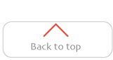

A client that wants to display their brands logo with an option of sign in/ sign up.
Seeing the brand logo let's the user know they are in the right site with easy access to a sign in option.
In my opinion, I like the Cadence and cause header for a logo that it's not very complex but the context will give live to the site. The contrast is dark and light but not heavy.

A client that wants a minimalist and clean design with a sub-menu that appears sideways instead of horizontally.
A navigation bar that won't obstruct the view of the main content but at the same time giving easy access to the sub-menus.
In my opinion, I like the armani.com nav bar because it's very simple and clean it doesn't interfere with the main content. The font is easy to read using all capitals and a contrast between white, black and grey.

Users that need to confirm an action.
Confirm the action or move to another place on the site. For a user, it needs to be clear what the action will be.
I loved this CTA because it's clear what the action is. It interacts very nice with content that its behind do to the background being translucent.

When the user wants to fuature deals inside his/her website.
Show the clients promotions or news in a catching manner.
I liked this featured piece because it changes showing all the feature item in a slow way showing the user in what slide he is on.

Audience that wants regular updates of the site they are visiting.
Give regular updates with the webiste and social networks.
I love the icons to choose the subject the user is interested. I liked the colors their light but you still see them very good and the font is nice.

A client that needs to get in contact or has questions.
A client that needs to collect information from the user to contact him/her.
I liked the contact form from frequence because it looks simple and trustworthy for the user to leave their information. I like the contrast between orange and grey and the text is very readable.

Everyone that needs to create an account.
Have basic information about the user to create his/her account for feature reference.
I loved this website. The create account form is very creative and nice the background has a very low opacity so you can still see the presentation in the back.the color in the text is a light grey so it creates a nice balance with the background that is white.

Everyone that wants to display something extra from their content
Show aside more information about the main content.
I liked this aside of etsy it uses a border that is a nice pale blue the images are displayed in thumbnails with solid border.

Some one that wants another option to navigate the website.
Have more options for the user to navigate.
I liked the contrast with white, the font familiy and size are very nice and easy to read. The structure of the content makes the user find what he/she is looking for quiker.

Pepole who love to travel or is planning an upcoming trip.
Buy plane tickets, book a trip or look for destinations.
I just loved this site it makes me want to travel the whole world. I love that they show like a 360 of parts of the world with the different sounds. They use airfrance colors but they contrast very nice with the background.
